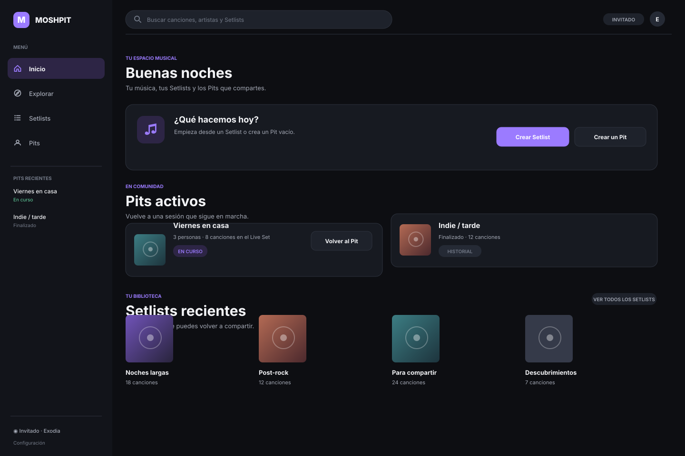
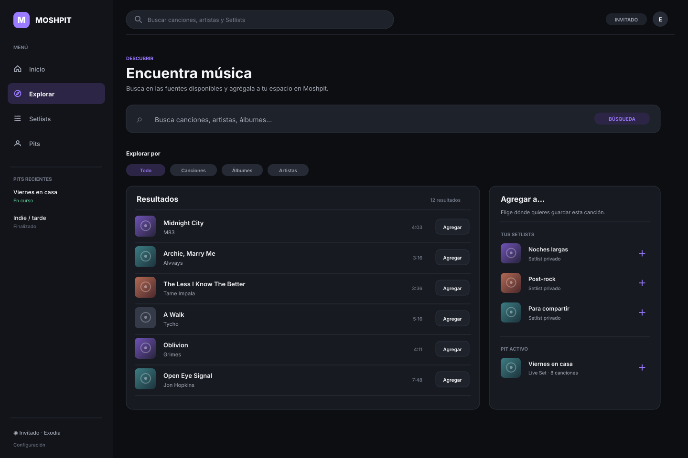
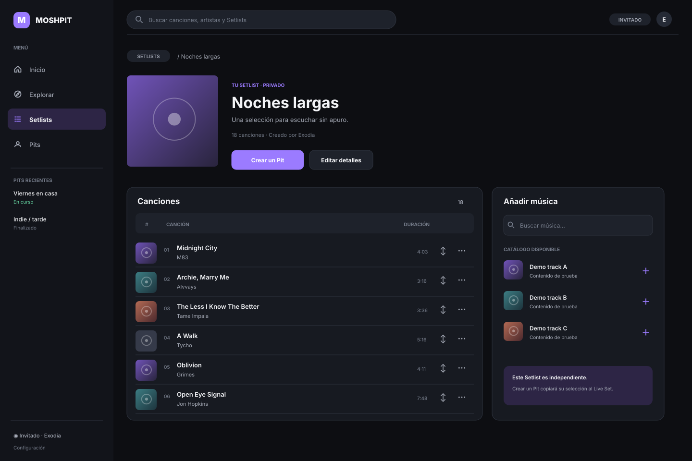
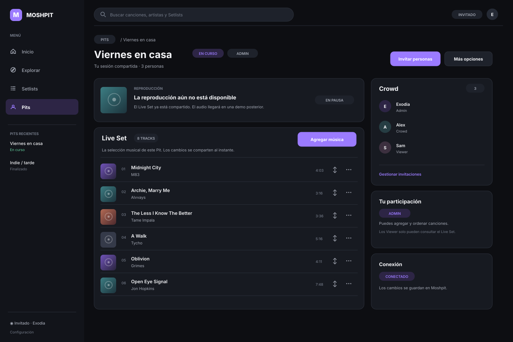
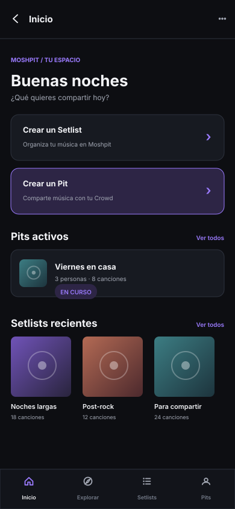
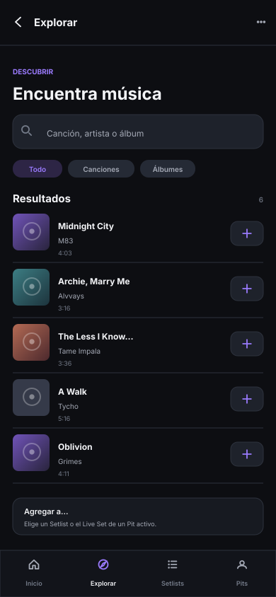
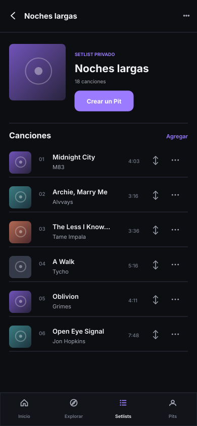
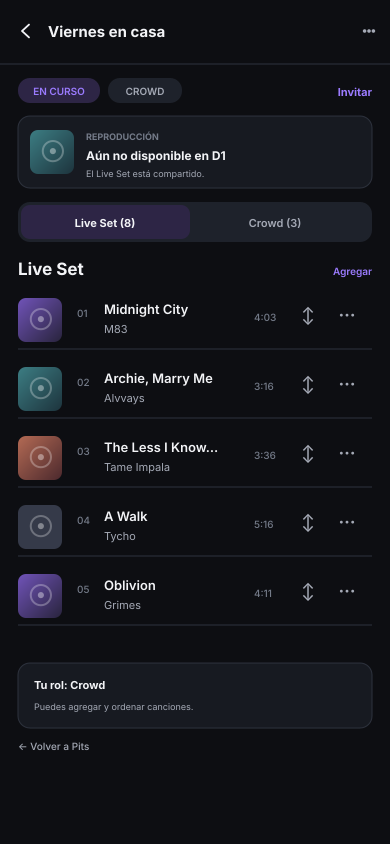

MOSHPIT · DESIGN
UI/UX Wireframes v0.1
Dark mode · Balanced density · Music-first · Sharing-first
Propuesta previa a implementación
Desktop
Sidebar persistente, búsqueda global y contenido con jerarquía musical.



Mobile
Diseños específicos para móvil, con navegación inferior y foco en la tarea principal.




Nota: estos son wireframes estructurales con una paleta preliminar para revisar distribución y jerarquía. No son los diseños finales ni reutilizan carátulas reales. La paleta, tipografía y navegación deben aprobarse antes de comenzar a implementar.